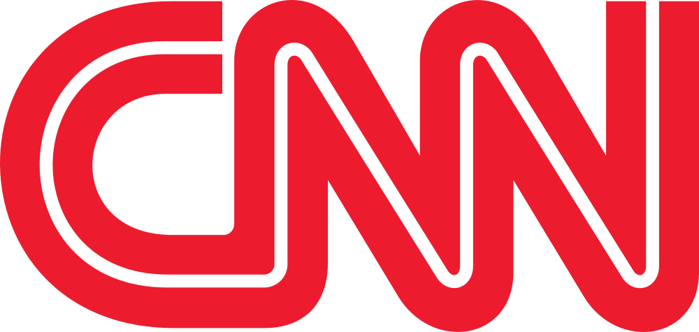

Categoría: Historia de los canales de televisión
El nacimiento de la televisión temática: HBO, los canales especializados y la revolución del cable (1948-1989)
Periodo: 1948-1989

La televisión temática no nació de un solo canal ni en una sola fecha. Sus antecedentes técnicos se encuentran en los sistemas CATV, que desde 1948 llevaron señales de televisión a comunidades estadounidenses con problemas de recepción. En su primera etapa, el cable era principalmente una infraestructura de retransmisión: una antena elevada captaba señales y una red las distribuía a los abonados.
Con el tiempo, la capacidad de los sistemas aumentó y apareció una pregunta empresarial distinta: ¿qué programación podía justificar una suscripción? La respuesta fue crear señales con una identidad y una audiencia definidas, en vez de limitarse a repetir las estaciones locales.
Charles Dolan participó en el desarrollo de sistemas de cable en Nueva York y en la creación de Green Channel, proyecto que se convirtió en Home Box Office. Time Inc. adquirió una participación decisiva y ayudó a financiar la expansión de la nueva señal. HBO fue fundada en 1972 y comenzó sus transmisiones el 8 de noviembre de ese año mediante un sistema de cable en Wilkes-Barre, Pensilvania.
Su importancia no consistió en inventar por sí sola la televisión temática. HBO convirtió el cable en una plataforma para una programación premium: películas, eventos y producciones que el abonado recibía como parte de un servicio de suscripción. El modelo combinaba una marca reconocible, derechos de contenido y una distribución que no dependía de la publicidad convencional de la televisión abierta.
En 1975 HBO utilizó un satélite para distribuir su señal a sistemas de cable de distintas regiones de Estados Unidos. La transmisión de Thrilla in Manila fue un momento decisivo porque mostró que un canal podía producir o adquirir una programación nacional y entregarla simultáneamente a operadores separados por grandes distancias.
El satélite no sustituyó automáticamente al cable: funcionó como una red de distribución mayorista, mientras que el operador local seguía necesitando una infraestructura para llegar al hogar. Esta combinación sería fundamental para la futura circulación internacional de señales.
ESPN comenzó sus transmisiones el 7 de septiembre de 1979 y construyó una programación centrada en el deporte durante todo el día. Su expansión ayudó a demostrar que una audiencia podía suscribirse a una señal definida por un género y no solo por una colección de programas de una estación local.
Nickelodeon también inició sus emisiones en 1979, aunque su identidad y marca se consolidaron progresivamente durante los primeros años. El canal orientó su propuesta hacia el público infantil y desarrolló una relación más directa entre programación, horarios y audiencia. La fundación de un canal y la consolidación de su imagen no fueron necesariamente el mismo acontecimiento.
CNN comenzó a emitir el 1 de junio de 1980 y organizó su propuesta alrededor de la información continua. La idea de una señal dedicada permanentemente a las noticias modificó la relación entre el canal, el acontecimiento y el horario de emisión. Su alcance inicial fue estadounidense, pero el modelo tendría una influencia internacional.
MTV comenzó el 1 de agosto de 1981 y convirtió los videoclips musicales en el centro de su programación. El canal no fue únicamente una lista de videos: desarrolló presentadores, identidad gráfica, promociones y una relación estrecha con la industria musical. Ambos casos muestran cómo la especialización incluía una forma de programar y construir marca, no solo un tema general.

Durante los años ochenta se multiplicaron las señales de cine, deportes, noticias, música, documentales, entretenimiento e infancia. Los operadores empezaron a organizar paquetes y niveles de suscripción. Un canal podía obtener ingresos por cuotas de afiliación, publicidad, venta de derechos o una combinación de esas fuentes.
El modelo también produjo nuevos problemas: negociación de derechos, ventanas de estreno, versiones lingüísticas, regulación de contenidos y diferencias entre mercados. Una señal internacional no llegaba automáticamente a todos los países; necesitaba acuerdos con distribuidores, autorizaciones y una infraestructura de recepción.
Al terminar los años ochenta, Latinoamérica contaba con una combinación de televisión abierta, operadores de cable y distribución satelital en expansión. México, Brasil, Argentina, Venezuela, Colombia, Chile, República Dominicana y otros mercados tenían regulaciones, coberturas y niveles de suscripción diferentes. Esa diversidad condicionó qué señales podían entrar, en qué idioma y con qué modelo comercial.
La infraestructura construida durante esa década preparó el terreno para que canales internacionales se distribuyeran regionalmente en los noventa. La llegada de una señal temática no significaba que desaparecieran las cadenas nacionales: añadía una capa de programación y reforzaba la segmentación por intereses.
En 1991 apareció HBO Ole, una operación orientada al mercado latinoamericano y vinculada al modelo de HBO. Su llegada fue importante porque conectó la experiencia internacional de la televisión premium con los operadores de cable de la región. La señal necesitó adaptar distribución, idioma, programación y acuerdos comerciales a un espacio formado por numerosos países y sistemas de suscripción.
HBO Ole funcionó como puente entre dos etapas: por un lado, la maduración del cable y los canales especializados en Estados Unidos; por otro, la expansión de la televisión de pago latinoamericana durante los años noventa. Su historia debe entenderse como una entrada regional posterior, no como prueba de que el cable o la televisión temática hubieran nacido en Latinoamérica en 1991.

.svg){kind=link}